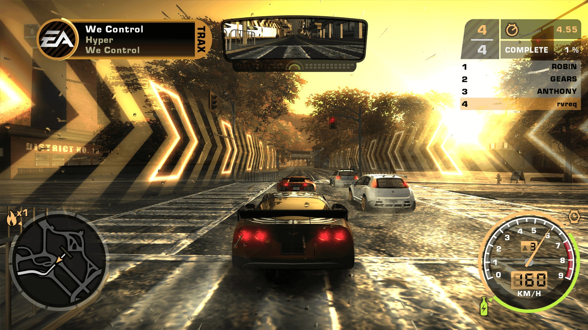
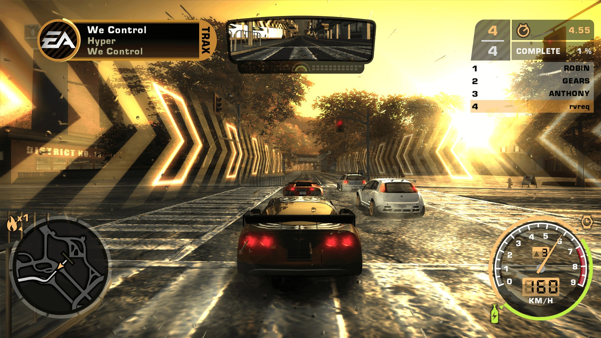

NFS MOST WANTED (2012)
Urban Open-World Racing Archive
Urban Open-World Racing Archive
 

"To be Most Wanted, you’ll need to outrun the cops, outdrive your friends, and outsmart your rivals."
Welcome to Fairhaven City. This digital repository contains the Criterion-developed racing simulation featuring the Autolog 2.0 social system and high-fidelity vehicle physics assets.
Operating System
Windows 7 / 10 / 11 (64-bit)
Processor (CPU)
Core 2 Quad 2.66 GHz / Phenom II X4 3.0 GHz
Memory (RAM)
4 GB RAM
Graphics (GPU)
DirectX 11 compatible with 1GB RAM
Storage
6 GB Available Space